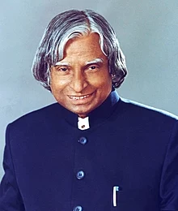

People's President
Avul Pakir Jainulabdeen Abdul Kalam (/ˈɑːbdəl kəˈlɑːm/ (listen); 15 October 1931 – 27 July 2015) was an Indian aerospace scientist and statesman who served as the 11th President of India from 2002 to 2007. He was born and raised in Rameswaram, Tamil Nadu and studied physics and aerospace engineering. He spent the next four decades as a scientist and science administrator, mainly at the Defence Research and Development Organisation (DRDO) and Indian Space Research Organisation (ISRO) and was intimately involved in India's civilian space programme and military missile development efforts.[1] He thus came to be known as the Missile Man of India for his work on the development of ballistic missile and launch vehicle technology.[2][3][4] He also played a pivotal organisational, technical, and political role in India's Pokhran-II nuclear tests in 1998, the first since the original nuclear test by India in 1974.[5]
After leaving office, Kalam became a visiting professor at the Indian Institute of Management Shillong, the Indian Institute of Management Ahmedabad, and the Indian Institute of Management Indore; an honorary fellow of Indian Institute of Science, Bangalore;[78] chancellor of the Indian Institute of Space Science and Technology Thiruvananthapuram; professor of Aerospace Engineering at Anna University; and an adjunct at many other academic and research institutions across India. He taught information technology at the International Institute of Information Technology, Hyderabad, and technology at Banaras Hindu University and Anna University.[79] In 2011, Kalam was criticised by civil groups over his stand on the Koodankulam Nuclear Power Plant; he supported the establishment of the nuclear power plant and was accused of not speaking with the local people.[80] The protesters were hostile to his visit as they saw him as a pro-nuclear scientist and were unimpressed by the assurances he provided regarding the safety features of the plant.[81] In May 2012, Kalam launched a programme for the youth of India called the What Can I Give Movement, with a central theme of defeating corruption
For more information, visit wikipedia